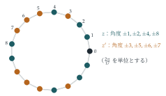

STEP II 1991、第4問
先に進む前に問題を読んでおこう。問題は STEP Support Programme の問題データベースにある： step.maths.org/questions/91-s2-q4
導入
1796年3月30日、ゲッティンゲン（Göttingen）の18歳の学生が、生涯にわたって書き続けることになる数学日記の最初の記述を残した。彼は、正 \(17\) 角形（regular \(17\)-sided polygon）を定規とコンパス（ruler and compasses）で作図する方法を発見したのである。古代ギリシャ人は、辺の数が \(3\), \(4\), \(5\), \(15\) の正多角形と、それらの辺の数を2倍にしたものの作図法を知っていたが、それから二千年の間、新たに一つでも付け加えた者はいなかった。カール・フリードリヒ・ガウス（Carl Friedrich Gauss）は後に、この発見によって文献学者ではなく数学者になる決心をしたと語っており、墓石に正 \(17\) 角形を刻むよう頼んだとも伝えられている。
この作図の核心は、本問の後半部分にある。すなわち、ある特定の四つの余弦の和が \(\frac{\sqrt{17} - 1}{4}\) に等しいという事実であり、これは平方根しか含まない数である。平方根から組み立てられる長さは定規とコンパスで作図でき、ガウスは同じ種類の手順をさらに三回重ねることで、\(\cos\frac{2\pi}{17}\) そのものを作図することができた。
取りかかる前に
\(\cos\frac{2\pi}{5}\) に関する前半部分が、なぜ \(17\) 角形についての問題に登場するのだろうか。
これは準備運動であり、同じ考え方をより小さな多角形に適用している。五角形の場合、和 \(\cos\phi + \cos 2\phi\) は有理数係数の二次方程式（quadratic）を満たすので、二次方程式を解くことで求められる。\(17\) 角形の場合も、四つの余弦の和 \(z\) が二次方程式を満たすことが分かる。どちらの場合も、鍵は余弦どうしを掛け合わせ、\(\cos A\cos B = \frac12\bigl(\cos(A + B) + \cos(A - B)\bigr)\) を用いて、積を同じ角の余弦の和に戻すことである。
順を追って解く
段階 1 正五角形
\(y^2 = (\cos\phi + \cos 2\phi)^2\) を展開し、各積を和に直したうえで、\(5\phi = 2\pi\) を用いて \(3\phi\) や \(4\phi\) のような角を簡約せよ。
\[y^2 = \cos^2\phi + 2\cos\phi\cos2\phi + \cos^2 2\phi = \tfrac12(1 + \cos 2\phi) + (\cos 3\phi + \cos\phi) + \tfrac12(1 + \cos 4\phi).\] \(5\phi = 2\pi\) であるから、\(\cos 3\phi = \cos(2\pi - 2\phi) = \cos 2\phi\) かつ \(\cos 4\phi = \cos\phi\) である。よって \[y^2 = 1 + \tfrac12(\cos\phi + \cos2\phi) + (\cos\phi + \cos 2\phi) = 1 + \tfrac32 y,\] すなわち \(2y^2 = 3y + 2\) である。■ \(2y^2 - 3y - 2 = (2y + 1)(y - 2) = 0\) の解は \(y = 2\) と \(y = -\frac12\) である。しかし \(y = 2\) となるには二つの余弦がともに \(1\) に等しくなければならず、そうはならないので、\(y = -\frac12\) である。■
段階 2 1の17乗根の和は0である
\(\sum_{k=0}^{16}\cos k\theta\) は \(\sum_{k=0}^{16}\omega^k\) の実部である。ここで \(\omega = e^{\mathrm{i}\theta}\) は1の原始 \(17\) 乗根（primitive root of unity）である。この等比級数（geometric series）の和は \(\frac{\omega^{17} - 1}{\omega - 1} = 0\) である。■
したがって \(\sum_{k=1}^{16}\cos k\theta = -1\) である。\(\cos(17 - k)\theta = \cos k\theta\) であるから項は二つずつ組になり、 \[\sum_{k=1}^{8}\cos k\theta = -\tfrac12.\]
段階 3 余弦を二つのグループに分ける
\(z = \cos\theta + \cos2\theta + \cos4\theta + \cos8\theta\) とし、残りの四つの余弦の和 \(\cos3\theta + \cos5\theta + \cos6\theta + \cos7\theta\) を \(z'\) とする。\(z + z'\) はいくらか。
段階2より \(z + z' = -\frac12\) である。さらに \(zz'\) も求められれば、\(z\) と \(z'\) はある二次方程式の解となる。
\(zz'\) を計算せよ。これを \(16\) 個の積 \(\cos a\theta\cos b\theta\) に展開し、それぞれを二つの余弦の和に直して、\(\cos\theta, \cos2\theta, \ldots, \cos8\theta\) のそれぞれが何回現れるかを数えよ。（角は \(\cos k\theta = \cos(17 - k)\theta\) と \(\cos(-k\theta) = \cos k\theta\) を用いて簡約する。）
各積は \(\cos a\theta\cos b\theta = \frac12\bigl(\cos(a + b)\theta + \cos(a - b)\theta\bigr)\) となるので、\(zz'\) は \(32\) 個の余弦の和の \(\frac12\) 倍である。\(a \in \{1, 2, 4, 8\}\)、\(b \in \{3, 5, 6, 7\}\) となる \(16\) 組を順に調べていく。たとえば \(a = 1\), \(b = 3\) からは \(\cos4\theta\) と \(\cos2\theta\) が得られ、\(a = 8\), \(b = 7\) からは \(\cos15\theta = \cos2\theta\) と \(\cos\theta\) が得られる。十六組すべてについてこれを実行すると、\(\cos\theta, \ldots, \cos8\theta\) のそれぞれがちょうど四回ずつ現れる。したがって \[zz' = \tfrac12 \times 4 \times \sum_{k=1}^{8}\cos k\theta = 2 \times \left(-\tfrac12\right) = -1.\]
段階 4 二次方程式
よって \(z\) と \(z'\) は \(t^2 + \frac12 t - 1 = 0\)、すなわち \(4t^2 + 2t - 4 = 0\) の解であり、その解は \(t = \frac{-1 \pm \sqrt{17}}{4}\) である。どちらが \(z\) だろうか。数値的には \(\cos\theta \approx 0.932\), \(\cos2\theta \approx 0.739\), \(\cos4\theta \approx 0.092\), \(\cos8\theta \approx -0.983\) であるから、\(z \approx 0.78 > 0\) である。ゆえに \[z = \frac{-1 + \sqrt{17}}{4} = -\frac{1 - \sqrt{17}}{4}. \qed\]
振り返り
積を和に直す。 余弦の積和公式（product-to-sum formula）によって、\(y^2\) と \(zz'\) が同じ余弦たちの和に変わり、計算がその中で閉じた。
和と積から二次方程式が得られる。 \(z + z'\) と \(zz'\) が分かることは、\(z\) と \(z'\) を解にもつ二次方程式が分かることと同じである。
正しい分け方が肝心である。 八つの余弦を \(\{1, 2, 4, 8\}\) と \(\{3, 5, 6, 7\}\) に分けたことで、\(zz'\) の中にどの添字も等しい回数だけ現れた。でたらめに分けたのではうまくいかない。
背後にある数学
なぜ \(\{1, 2, 4, 8\}\) なのか。\(17\) を法として、\(3\) の累乗 \(3^0, 3^1, 3^2, \ldots\) は0でないすべての剰余（residue）を巡る。 \[1, 3, 9, 10, 13, 5, 15, 11, 16, 14, 8, 7, 4, 12, 2, 6.\] 一つおきに \(3^0, 3^2, 3^4, \ldots\) をとると \(1\), \(9\), \(13\), \(15\), \(16\), \(8\), \(4\), \(2\) が得られ、これらは \(17\) を法として \(\pm1\), \(\pm2\), \(\pm4\), \(\pm8\) であり、ちょうど \(z\) に現れる角である。残りの半分からは \(\pm3, \pm5, \pm6, \pm7\) が得られ、これは \(z'\) に現れる角である。ガウスは、このような類にわたる \(\omega^k\) の和を周期（periods）と呼んだ。\(17 - 1 = 16 = 2^4\) であるから、剰余は四回半分に分けることができ、各段階で周期は、前の段階の周期を係数に含む二次方程式を満たす。四つの二次方程式、つまり四つの平方根によって、有理数から \(\cos\frac{2\pi}{17}\) まで降りていくことができる。 \[\begin{gathered} \cos\tfrac{2\pi}{17} = \tfrac{1}{16}\Bigl(-1 + \sqrt{17} + \sqrt{34 - 2\sqrt{17}} \\ {} + 2\sqrt{17 + 3\sqrt{17} - \sqrt{34 - 2\sqrt{17}} - 2\sqrt{34 + 2\sqrt{17}}}\Bigr). \end{gathered}\] どの段階も平方根しか含まず、平方根は（相似な三角形や半円を用いて）定規とコンパスで作図できるので、正 \(17\) 角形は作図可能である。

どの多角形が作図できるか
ガウスが主張し、1837年にヴァンツェル（Pierre Wantzel）が証明したところによれば、正 \(n\) 角形が定規とコンパスで作図できるのは、\(n\) が \(2\) の累乗と相異なるフェルマー素数（Fermat primes）、すなわち \(2^{2^m} + 1\) の形の素数の積との積であるとき、かつそのときに限る。知られているフェルマー素数は \(3\), \(5\), \(17\), \(257\), \(65537\) であり、これらは第 1.1 節のフェルマー数である。（フェルマー（Fermat）はこの形の数がすべて素数であると予想したが、オイラー（Euler）は \(2^{32} + 1\) が \(641\) で割り切れることを示した。それ以降、新たなフェルマー素数は一つも見つかっていない。）したがって正 \(257\) 角形と正 \(65537\) 角形は作図可能である。19世紀には Johann Hermes が約十年をかけて正 \(65537\) 角形の作図法を詳細に書き上げ、その手稿はゲッティンゲンに保管されている。正 \(7\) 角形と正 \(11\) 角形は作図できない。\(7\) と \(11\) はフェルマー素数ではないからである（\(7 - 1 = 6\) と \(11 - 1 = 10\) は \(2\) の累乗ではない）。正 \(9\) 角形も作図できない。\(9 = 3^2\) ではフェルマー素数 \(3\) が重複するからである。ヴァンツェルの証明には、第 6.3 節で扱う体の拡大次数（field degrees）の理論が用いられる。
思考のスキル
ある量を求めるには、それに自然な相棒を組み合わせ、両者の和と積を計算して、得られる二次方程式を解けばよい。
腕の見せどころは、和も積も計算できるように相棒を選ぶことにある。本問では、相棒は \(17\) を法とする剰余の対称性から得られ、この考え方を四回繰り返すことで、ガウスは作図法にたどり着いた。
次の一歩
正七角形。 STEP II 1995、第6問に取り組んでみよう。この問題は、1の累乗根をグループに分けるというガウスの考え方を1の7乗根に適用し、余弦の和と正弦の和の正確な値を求めるものである。正弦の和の符号を決めるところが微妙な一歩である。
正五角形。 \(\cos\frac{2\pi}{5} = \frac{\sqrt5 - 1}{4}\) を示し、それを用いて正五角形の定規とコンパスによる作図法を説明せよ。
もう一方の周期。 \(z' = \cos3\theta + \cos5\theta + \cos6\theta + \cos7\theta = \frac{-1 - \sqrt{17}}{4}\) であることを数値的に確かめよ。
生成元。 \(17\) を法とする \(3\) の累乗は0でないすべての剰余を与えるが、\(2\) の累乗はそうではないことを示せ。\(2\) の累乗はどの剰余を与えるか。
さらに学ぶために
Ian Stewart, Galois Theory（CRC Press）。『ガロア理論』。定規とコンパスによる作図と正 \(17\) 角形を扱う章がある。
Richard Courant & Herbert Robbins, What Is Mathematics?（Oxford University Press）。『数学とは何か』。第3章は、正 \(17\) 角形を含む作図についての、初等的で見事な解説である。
Daniel Kehlmann, Measuring the World（Quercus）。『世界の測量』。ガウスとフンボルト（Alexander von Humboldt）を描いた喜劇的な小説であり、息抜きに最適である。